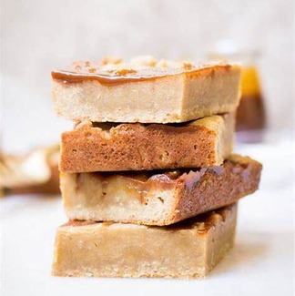

Caramel Sauce
Ingredients
- 250g caster sugar
- 142ml pot double cream
- 50g butter
Instructions
- Tip the sugar into a heavy-based frying pan, stir in 4 tbsp water, then place over a medium heat until the sugar has dissolved.
- Turn up the heat and bubble for 4-5 minutes until you have caramel.
- Take off the heat, then carefully stir in the cream and butter.
- Leave the sauce to cool, then tip into a squeezy bottle.
Caramel is made by heating sugar, most often with water in a saucepan until the sugar dissolves and a chemical reaction takes place. This happens at around 160-180C making caramel quite dangerous to work with. At this point the sugar will have already dissolved if using water and starts to brown and take on different flavour notes. A good caramel should be taken to a deep amber colour and taken off and stopped cooking any further at the point where it is on the edge of burning.
Enjoy your delicious caramel sauce!
Caramel Blondies
Ingredients
- 1/2 cup unsalted butter, melted
- 1 cup light brown sugar, packed
- 1 large egg
- 1 teaspoon vanilla extract
- 1 cup all-purpose flour
- 1/4 teaspoon salt
- 1/2 cup caramel sauce
Instructions
- Preheat the oven to 350 degrees F (175 degrees C). Grease an 8-inch square baking pan.
- In a large bowl, whisk together the melted butter and brown sugar until smooth.
- Add the egg and vanilla extract and whisk until combined.
- Add the flour and salt and whisk until just combined.
- Pour the batter into the prepared pan and spread it out evenly.
- Drizzle the caramel sauce over the top of the batter.
- Use a knife to swirl the caramel sauce into the batter.
- Bake for 20-25 minutes, or until a toothpick inserted into the center comes out clean.
- Allow to cool completely before slicing.
Enjoy your delicious caramel blondies!